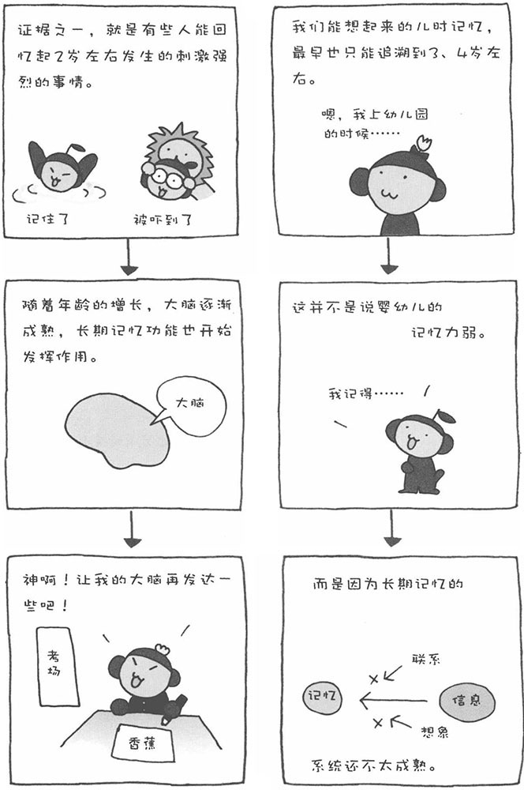
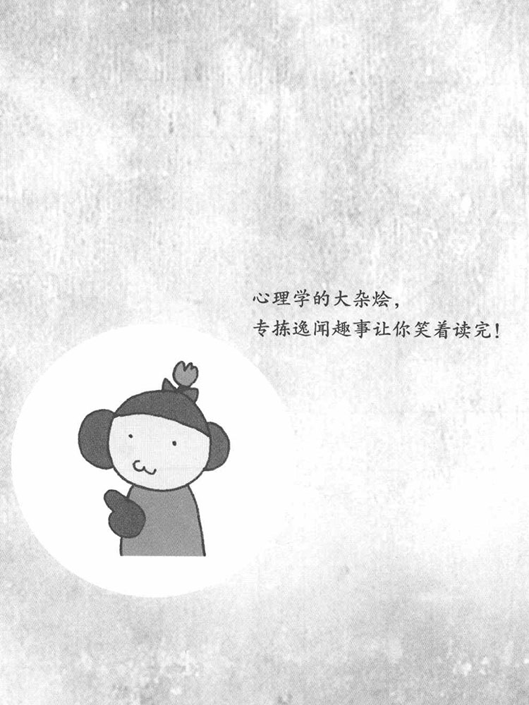

您对自己孩提时代的记忆最早能追溯到几岁？大部分人都是从4、5岁左右开始有记忆的，也有人能记起3岁时发生的事情。那么，之前的记忆跑到哪里去了呢？
也许有人会说，这是由于婴幼儿的记忆力差造成的。其实不然，人类婴儿的记忆力都是非常强的，很多心理学家已经通过实验证实了这一点。从婴儿到幼儿的这段时期，我们没用几年的时间，就记住了一门语言，有这种记忆力还不够强大吗？此外，我们生存的很多技能，都是在婴幼儿时期学会的。
我们一般认为，虽然婴幼儿也具有长期记忆的能力，但在那个年龄阶段，长期记忆系统基本上还不能很好地运行。研究人员发现，有个别的孩子在2、3岁的时候就能用语言描述出记忆中以前的事情，但孩子们所谓的记忆，大多是片段或者并不准确。当人长到4岁左右，认知机能才迅速发展起来，并开始能够审视内在的自我。这时，孩子开始能够理解记忆了，并开始使用诸如"记住"、"忘记"等与记忆有关的词语。在这个时期，人的长期记忆系统才逐渐健全起来。因此，我们成年之后，再回忆自己的孩提时代时，一般只能想起3、4岁之后的事情。
对于人来说，"记忆"非常重要。实际上，"忘记"也同样重要。如果我们无法忘记以前的痛苦经历，总是背着伤痛过日子，时间长了，痛苦的经历多了，心就再也无法承受了……在我们的记忆系统，还有一个强大的功能，那就是会选择那些不好的记忆主动去忘记。

